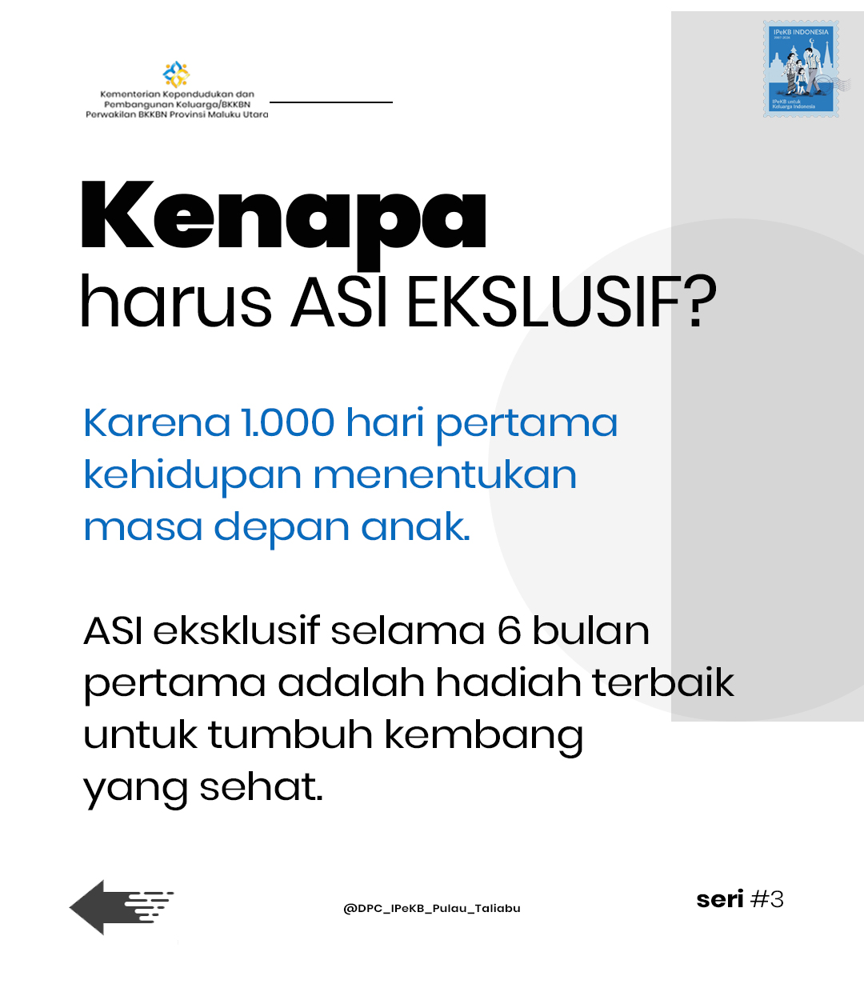

Artikel Terbaru
Memuat artikel...
Jadwal Sholat
Waktu Berikutnya
Subuh
--:--:--
Imsak
04:58
Subuh
05:08
Dzuhur
12:28
Ashar
15:47
Maghrib
18:32
Isya
19:42
INFOGRAFIS & POSTER
1 / 1

Edukasi Batasi Waktu Layar Anak - Humas BKKBN Maluku Utara
Trending & Kabar Kilat
Saluran Aspirasi
Media Center & Aduan Humas
Sekretariat Humas
Redaksi Berita & Media Hub
Mr. HUSNI - Tim Kerja HUMAS
- Kantor Perwakilan Kemendukbangga/BKKBN Provinsi Maluku Utara
- humas.malut@bkkbn.go.id
- Layanan Media & Pers Perwakilan Kemendukbangga/BKKBN Malut
Respon Cepat Wartawan
WhatsApp Media Liaison Officer (LO)
Layanan verifikasi kutipan narasumber pimpinan dan konfirmasi peliputan cepat.
Formulir Terpadu
Permohonan Wawancara Pimpinan
Pengajuan surat resmi atau undangan liputan bersama Kepala Perwakilan BKKBN.
Struktur Redaksi
TIM HUMAS
Garda terdepan diseminasi informasi dan komunikasi publik Kemendukbangga/BKKBN Perwakilan Maluku Utara